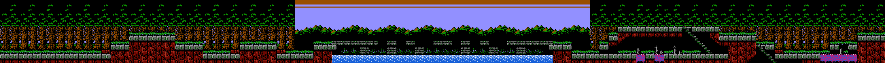

Full route artifact
One route image, four connected layout-space segments
validated source layout
inferred layout segment
special screen-record decode
3072x224 px, no emulator screenshot source art.
Route milestone
Four continuous segments now compose into one 3072x224 day-palette route image: Jova Woods, Jova-Veros Bridge, Veros Woods Part 1, and Veros Woods Part 2.

Full route artifact
Segment inventory
Data flow
The route renderer resolves runtime context into a screen record, layout index, layout header, column-group pointers, metatile definitions, CHR banks, and palette bytes before drawing into a shared route buffer.
Special case preserved
FE 06 FFThe raw screen record at 2:$A1A3 starts with FE 06 FF, so the route data records an explicit layout-index override to 0x06. That resolves layout header 2:$A26C and keeps the discovery auditable.
Next demo goal
The next target is adding emulator validation windows for the inferred route pieces, decoding day/night palette variants, and connecting additional outdoor branches with the same segment metadata.